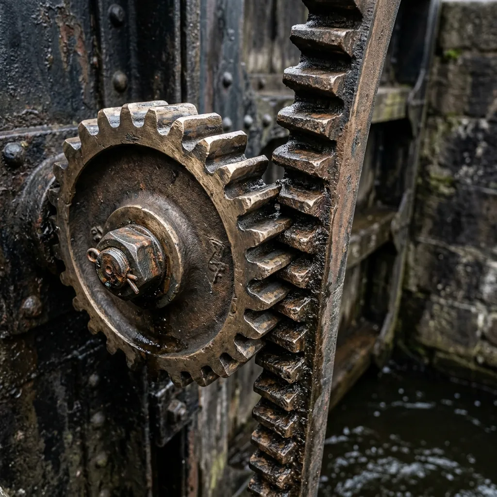

Hand-Forged Waterway Ironwork Specifications
Precision metrology meets traditional heavy blacksmithing for enduring lock gate hardware.
Metrology Standards: Bronze Gears & Iron Racks
Educating our navigation partners on the superior wear characteristics and galvanic stability of our primary metallurgical alloys.
| Component Element | Material Specification | Tensile Strength (MPa) | Machining Accuracy | Estimated Lifespan |
|---|---|---|---|---|
| Winding Pinion Gears | Phosphor Bronze (BS 1400 PB2) | 350 MPa | ±0.1mm (Tooth Pitch) | 100+ Years (Submerged) |
| Lifting Racks | Charcoal-Forged Wrought Iron | 310 MPa | Hand-forged tolerance | 80+ Years (Treated) |
| Retention Straps | Wrought Iron Scrap (Re-smelted) | 280 MPa | Hydraulic-tensioned | 120+ Years |
The choice to utilize phosphor bronze against wrought iron is a deliberate, historically validated engineering decision. Operating within the damp, highly oxygenated confines of a canal lock chamber, traditional all-iron paddle mechanisms are prone to catastrophic rust-seizing. The dissimilar metals prevent galvanic corrosion from welding the gear teeth together over decades of neglect.
Furthermore, bronze gears provide intrinsic spark-hazard elimination—critical in environments near industrial fuel depots—and offer a natural self-lubricating property that significantly reduces the friction load on hand-wound rack-and-pinion paddle assemblies.
Timber Selection & Pressure-Sealing Joints
The mechanical engineering behind green oak frame swelling and deep hydrostatic sealing under pressure.
Milling English Green Oak (Quercus robur)
We source only structural-grade green English oak for all replacement sluice frames. Unlike kiln-dried lumber, green oak retains a high moisture content during the milling process. When the finished tongue-and-groove joint is finally submerged under a two-metre water head, the timber expands forcefully. This natural hydro-swelling action effectively locks the timber joints into an immovable, monolithic barrier against the flow of the canal pound.
Pitch-Treated Leather Gaskets
Where the timber paddle meets the stone lock sill, modern rubber seals inevitably degrade under the sheer abrasive force of river silt. We rely on heavy ox-leather pressure gaskets, deeply impregnated with boiling coal-pitch. This traditional seal remains supple under freezing towpath conditions and compresses perfectly against irregular Victorian stonework, providing an absolute zero-bypass seal.
Hot-Rivet Joinery & Hydraulic Anchor Tensioning
Applying immense thermal clamping force to secure green oak frames using traditional wrought-iron bands.
1. Thermal Expansion
Solid 16mm wrought-iron rivets are heated in our mobile coal forge until they reach a glowing, malleable yellow heat. The expanded rivet is quickly driven through the aligned holes of the iron strapping and oak frame before it can cool.
2. Hand-Peening
Using heavy shaping hammers, the master blacksmith rapidly peens the protruding end of the glowing rivet into a dome, locking the iron strap mechanically to the timber face against the incredible force of the water.
3. Contraction Tension
As the iron rivet cools to ambient temperature, it shrinks longitudinally. This thermal contraction generates a relentless hydraulic-equivalent clamping force, pulling the joint tighter than any modern threaded bolt could achieve.
Once the riveting is complete and the timber frame is fully tensioned, the entire wrought-iron assembly is weatherproofed using a heavy application of traditional coal-tar enamel. This thick, historic coating displaces moisture and provides a sacrificial barrier against the corrosive effects of alternating wet-and-dry cycles in the lock chamber.
The Circular Wrought-Iron Scrap Exchange
Re-smelting historic Victorian puddle-iron scrap for authentic, metallurgically compliant restoration forging.
For Grade I and Grade II listed waterway structures, utilizing modern mild steel is often prohibited. To maintain historical compliance, our guild operates a circular scrap exchange.
- Salvage & Pooling: Guild members deposit unrepairable Victorian ironwork—such as shattered gear racks or rusted lock ladders—into our central scrap reserve.
- Re-smelting: The puddle-iron scrap is melted down and re-forged into usable bar stock, preserving the distinct fibrous silicate slag inclusions that give wrought iron its legendary corrosion resistance.
- Certification: Every forged repair is accompanied by a material provenance certificate, signed by our master millwright, ensuring seamless approval from Historic England inspectors during heritage audits.
Real-Time Lock Hardware Spares Inventory
Immediate availability of pre-forged gear teeth, axles, and winding handles to prevent prolonged canal closures.
| Component | Material | Current Stock | Dispatch Time |
|---|---|---|---|
| Bronze Winding Pinions | Phosphor Bronze | 45 units | 24 Hours |
| Heavy Iron Retaining Straps | Forged Wrought Iron | 120 metres | 48 Hours |
| Sluice Frame Blanks | Green English Oak | 30 units | 72 Hours |
| Pitch-Treated Leather Gaskets | Ox Leather | 85 units | 24 Hours |